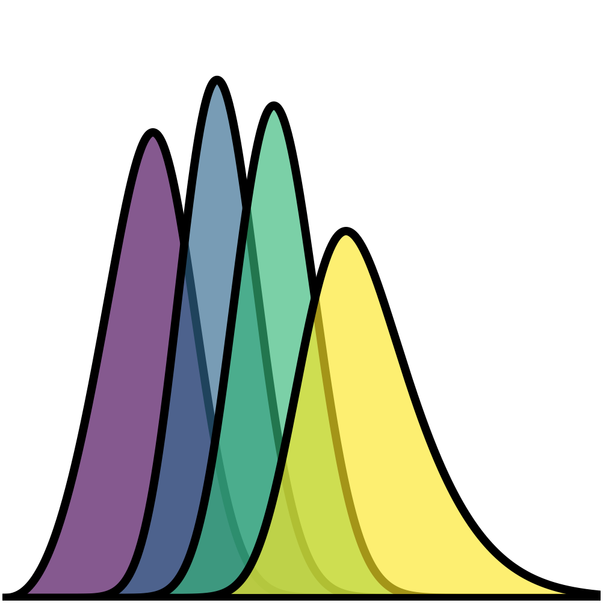
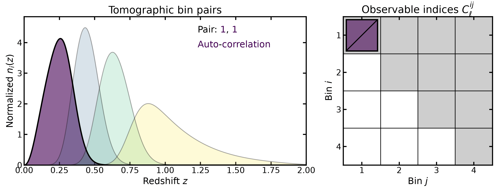

Applications of tomography#

Why tomography is useful#
Tomographic binning allows cosmological correlations to be studied as a function of redshift, thereby probing the time evolution of large-scale structure.
This is particularly important for observables that integrate information along the line of sight, such as angular galaxy clustering and weak gravitational lensing.
By splitting the galaxy sample into multiple bins, one gains access to
auto-bin correlations, measured within the same tomographic bin;
cross-bin correlations, measured between different tomographic bins.


Tomography produces both auto-bin and cross-bin observables, corresponding to different pairs \((i,j)\) in the tomographic data vector.
The joint analysis of auto- and cross-correlations enables sensitivity to redshift-dependent physical effects such as the growth of structure, geometric distances, and galaxy bias evolution.
These effects are partially degenerate in fully projected measurements and can be better distinguished when redshift information is retained.
Tomographic weak-lensing analyses were formalized by Hu (1999) [Hu1999], who showed that even coarse redshift binning can recover a large fraction of the available three-dimensional information.
Selections based on other galaxy properties may also provide sensitivity to population-dependent physical effects, such as luminosity-dependent galaxy bias or intrinsic alignments.
The scientific motivation for a tomographic selection therefore depends on the physical information that the analysis aims to retain or distinguish.
Tomographic observables in different probes#
In practice, correlations often involve two distinct galaxy samples rather than a single one.
A common example is galaxy–galaxy lensing, where an analysis uses a lens sample and a source sample, each with its own set of tomographic bins.
In this case, the primary observable is the cross-correlation between lens positions and source galaxy shapes, which probes the matter distribution around foreground lens galaxies through its gravitational lensing effect on background source galaxies.
Depending on the analysis strategy, additional correlations may also be included, such as correlations within the lens sample (galaxy clustering) or correlations within the source sample (cosmic shear).
Different cosmological probes therefore make use of different subsets of the possible bin-pair correlations.
For example:
Cosmic shear uses correlations between source bins. Because shear–shear angular power spectra are symmetric in the bin indices, the pair \((i,j)\) is equivalent to \((j,i)\).
Galaxy clustering uses correlations between lens bins. These angular power spectra are also symmetric in the bin indices \((i,j)\).
Galaxy–galaxy lensing uses cross-correlations between lens and source bins. The two indices refer to different galaxy samples and therefore cannot generally be interchanged while keeping the field ordering fixed.
For two fields \(X\) and \(Y\), the corresponding angular cross-power spectra satisfy
For fields belonging to the same sample and observable type, this reduces to the familiar symmetry
For galaxy–galaxy lensing, the corresponding relation is
However, this does not generally imply
because the latter exchanges the bin indices without exchanging the corresponding fields.
In combined analyses such as 3x2pt (the joint analysis of cosmic shear, galaxy–galaxy lensing, and galaxy clustering two-point correlations), several probes are used simultaneously.
The resulting data vector may therefore contain a mix of auto- and cross-correlations between the tomographic bins of different galaxy samples.
Tomographic bin combinations#
For a single sample with \(N_{\mathrm{bins}}\) tomographic bins, the number of possible ordered bin pairs is
For a symmetric observable, only the unique pairs with
need to be retained.
The corresponding number of unique bin pairs, including auto-bin correlations, is
For two distinct galaxy samples with \(N_{\mathrm{lens}}\) lens bins and \(N_{\mathrm{source}}\) source bins, the number of possible lens–source combinations is
Not all possible combinations necessarily need to be included in a scientific analysis.
For example, galaxy–galaxy lensing analyses may select bin pairs according to the relative locations or overlap of the lens and source redshift distributions.
Other analyses may restrict the allowed combinations according to additional scientific or statistical criteria.
Binny provides utilities for generating and filtering bin combinations.
The available combinations and selection criteria are described in Bin-index combinations.
Role of binning in cosmological analyses#
Tomographic bins define the populations entering the observables used in a cosmological analysis.
For example, a tomographic galaxy clustering measurement produces angular power spectra
for the selected combinations of lens bins \(i\) and \(j\).
Similarly, weak-lensing tomography produces angular shear power spectra between source bins,
while galaxy–galaxy lensing produces angular cross-power spectra between lens and source bins,
Joint analyses may combine these observables across multiple tomographic bin pairs.
The number of bins, the choice of binning prescription, and the selection of bin combinations therefore determine both the dimensionality of the data vector and the redshift resolution of the analysis.
For projected observables, tomographic angular power spectra can be expressed as projections of three-dimensional power spectra along the line of sight.
For illustration, under the Limber approximation in a spatially flat cosmology, their signal contributions can be written as
Here
\(X\) and \(Y\) label the projected fields,
\(P_{XY}(k,z)\) is the relevant three-dimensional power spectrum, with its definition depending on the convention adopted for the projection kernels,
\(\chi\) is the comoving radial distance,
\(\chi_{\mathrm{H}}\) is the comoving horizon distance,
\(W_i^X(\chi)\) and \(W_j^Y(\chi)\) are the projection kernels for the corresponding fields and tomographic bins.
Using the distance-redshift relation
the projection can equivalently be expressed as an integral over redshift,
The projection kernels depend on the tomographic redshift distributions \(n_i(z)\).
Different binning prescriptions and selection models therefore modify the projection kernels and ultimately change the observable correlations.
The form of the projection kernel depends on the observable being considered.
Galaxy clustering kernel#
For the density contribution to galaxy clustering with deterministic linear galaxy bias, the projection kernel can be written as
where \(b_i(z)\) is the galaxy bias and the redshift distribution \(n_i(z)\) is normalized independently.
Equivalently,
With this convention, the clustering angular power spectrum is obtained by projecting the three-dimensional matter power spectrum \(P_{\mathrm{mm}}(k,z)\).
This expression describes the galaxy density contribution. Additional physical effects, such as magnification and redshift-space distortions, may require further terms.
Weak-lensing kernel#
For gravitational lensing in a spatially flat cosmology, the lensing efficiency kernel of source bin \(i\) can be written as
where
\(H_0\) is the present-day Hubble parameter,
\(\Omega_{\mathrm{m}}\) is the matter density parameter,
\(a(\chi)\) is the scale factor,
\(n_i^\chi(\chi)\) is the normalized source distribution per unit comoving radial distance.
The comoving-distance distribution is related to the normalized redshift distribution through
Unlike the galaxy density kernel, the lensing efficiency kernel depends on an integral over the source population behind the considered distance.
Cosmic shear and galaxy–galaxy lensing can therefore depend on the tomographic redshift distributions in different ways.
The above expressions illustrate how tomographic distributions enter cosmological projection calculations.
They are not intended as a complete description of all contributions to the corresponding observables.
Binny constructs and characterizes the underlying tomographic populations rather than computing the cosmological angular power spectra themselves.
Choice of tomographic configuration#
Increasing the number of tomographic bins can provide finer resolution of redshift-dependent physical effects.
However, subdividing a fixed galaxy population also reduces the number of galaxies available in individual bins.
This can increase the statistical noise associated with individual tomographic measurements.
In addition, redshift uncertainties may limit the effective resolution that can be achieved by introducing narrower bins.
Highly overlapping tomographic distributions may produce strongly correlated observables and limited additional independent information.
The choice of tomographic configuration therefore involves a balance between
redshift resolution,
population size within individual bins,
redshift uncertainties and selection effects,
correlations between tomographic observables,
sensitivity to the physical quantities of interest,
computational cost.
There is no universally optimal binning prescription.
The preferred configuration depends on the galaxy sample, the observable, the uncertainty model, and the scientific objectives of the analysis.
References#
Hu, W. (1999), Power Spectrum Tomography with Weak Lensing, ApJL 522, L21–L24. https://arxiv.org/abs/astro-ph/9904153